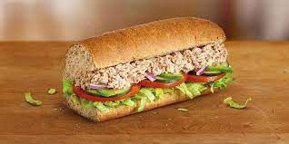

This Tuna Sub Puts Subway to Shame!

Tuna is a hearty, protein-packed fish. This sub is tasty, filling, and perfect for a quick lunch.
Who doesn't like a good sandwich or sub? It's the stereotypical lunch food. Hey Timmy, what'ya having for lunch? A sandwich. But next time Timmy gets asked about his lunch, it won't be just any sandwich. It'll be this hunk of meat slabbed between some toasted baked delicacy.
This sub is made from pretty simple ingredients. The tuna can be found at any grocery store, already seasoned to your liking. All of the components can be bought and there is minimal preparation time involved. That's why we love this recipe!
Ingredients
- 1 pack tuna, seasoned as you like
- 1/2 bagguette
- 4 tbp mayonaisse
- 1/4 red onion, sliced
- 1/1 cup spinach
- 1 tsp salt and black pepper
- Slice the bagguette in half. Place in a toaster oven.
- Combine tuna, salt, and mayonaisse in a bowl. Mix until smooth.
- When bread is done toasting, remove and spread some tuna spread onto it.
- Layer sliced onion and spinach on top of tuna.
- Close up that bad boy and dive in!